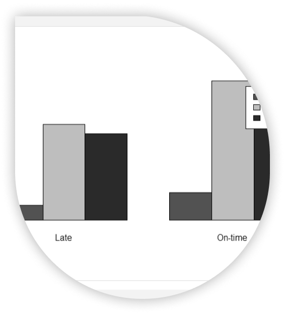
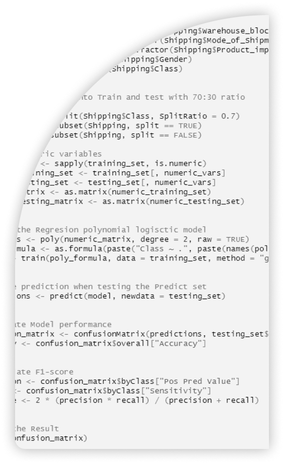

Go to project repo here


In this project, I harnessed the power of R to conduct a comprehensive Exploratory Data Analysis (EDA), create data visualizations, and construct a Regression Polynomial model. The primary goal was to predict the timeliness of product deliveries, using advanced analytical techniques to determine whether a shipment would arrive on time or experience delays.
Ontime vs Late
Prediction
Prediction